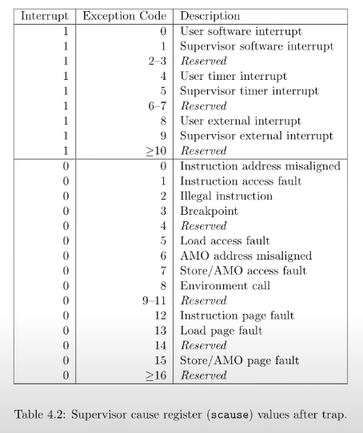

xv6 lazy page allocation
Background
sbrk()allocates physical memory and maps it into the process's virtual address space- It can take a long time for a kernel to allocate and map memory for a large request.
- some programs allocate more memory than they actually use
Solution
Allocate user memory lazily
sbrk() doesn't allocate physical memory, but just remembers which user addresses are allocated and marks those addresses as invalid in the user page table. When the process first tries to use any given page of lazily-allocated memory, the CPU generates a page fault, which the kernel handles by allocating physical memory, zeroing it, and mapping it.
Eliminate allocation from sbrk()
Task
- delete page allocation from the sbrk(n) system call implementation
- new
sbrk(n)should just increment the process's size(myproc()->sz)bynand return the old size - should not allocate memory
uint64
sys_sbrk(void)
{
int addr;
int n;
struct proc* p = myproc();
if(argint(0, &n) < 0)
return -1;
addr = p->sz;
if (n >= 0) {
p->sz += n;
} else {
p->sz = uvmdealloc(p->pagetable, p->sz, p->sz + n);
}
return addr;
}
当n < 0时，需要调用uvmdealloc释放不再需要的内存页，让进程的虚拟内存空间变小。
修改后，尝试在 xv6 中运行echo hi，会报错：
init: starting sh
$ echo hi
usertrap(): unexpected scause 0x000000000000000f pid=3
sepc=0x0000000000001258 stval=0x0000000000004008
panic: uvmunmap: not mapped

scause=0x000000000000000f表示 Page fault
sbrk没有 allocate memory，运行echo hi的时候访问了 invalid 的 virtual address，因此发生了 page fault。
Lazy allocation
Task
- respond to a page fault from user space
- mapping a newly-allocated page of physical memory at the faulting address
- returning back to user space to let the process continue executing
- Modify whatever other xv6 kernel code you need to in order to get
echo hito work.
check whether a fault is a page fault by seeing if r_scause() is 13 or 15 in usertrap()
if(scause == 8){
// ...
} else if((which_dev = devintr()) != 0){
// ok
} else if ((scause == 13 || scause == 15) && uvmshouldtouch(p, r_stval())) {
// page fault
uvmlazytouch(p, r_stval());
} else {
// ...
}
我这里用函数封装逻辑，更简洁。
int
uvmshouldtouch(struct proc *p, uint64 va)
{
// Kill a process if it page-faults on a virtual memory address
// higher than any allocated with sbrk().
if (va >= p->sz)
return 0;
// Handle faults on the invalid page below the user stack.
// should not touch guard page below stack
if (PGROUNDDOWN(va) <= p->trapframe->sp)
return 0;
pte_t *pte = walk(p->pagetable, va, 0);
return pte == 0 || (*pte & PTE_V) == 0;
}
根据 lazy，只有当va对应的页表项不存在或者对应的物理页不存在时，才需要分配物理页。
- Handle out-of-memory correctly: if
kalloc()fails in the page fault handler, kill the current process.
void
uvmlazytouch(struct proc *p, uint64 va)
{
va = PGROUNDDOWN(va);
char *mem = kalloc();
if (mem == 0) {
printf("lazy: out of memory\n");
p->killed = 1;
} else {
memset(mem, 0, PGSIZE);
// 创建PTE，将物理页映射到虚拟地址
if (mappages(p->pagetable, va, PGSIZE, (uint64)mem, PTE_W | PTE_X | PTE_R | PTE_U) != 0) {
printf("lazy: failed to map page\n");
kfree(mem);
p->killed = 1;
}
}
}
此时echo hi可以正常运行，但是已经破坏了 kernel，需要修复。
Handle the parent-to-child memory copy in fork() correctly.
int
uvmcopy(pagetable_t old, pagetable_t new, uint64 sz)
{
// ...
for(i = 0; i < sz; i += PGSIZE){
if((pte = walk(old, i, 0)) == 0)
continue;
if((*pte & PTE_V) == 0)
continue;
// ...
}
// ...
}
在 lazy 策略下，page table 中肯定存在 PTE 不存在或 invalid 的情况，如果检测到了 continue 即可（之前是直接 panic）
Handle the case in which a process passes a valid address from sbrk() to a system call such as read or write, but the memory for that address has not yet been allocated.
阅读代码后发现，read与write使用两个函数来处理用户和内核之间的数据传输：
copyout: Copy from kernel to user.copyin: Copy from user to kernel.
于是只需要在这两个函数中处理 lazy page allocation 即可。
int
copyout(pagetable_t pagetable, uint64 dstva, char *src, uint64 len)
{
uint64 n, va0, pa0;
struct proc *p = myproc();
while(len > 0){
va0 = PGROUNDDOWN(dstva);
// MY CODE BEGIN
if (uvmshouldtouch(p, va0)) {
uvmlazytouch(p, va0);
}
// END
pa0 = walkaddr(pagetable, va0);
if(pa0 == 0)
return -1;
n = PGSIZE - (dstva - va0);
if(n > len)
n = len;
memmove((void *)(pa0 + (dstva - va0)), src, n);
len -= n;
src += n;
dstva = va0 + PGSIZE;
}
return 0;
}
int
copyin(pagetable_t pagetable, char *dst, uint64 srcva, uint64 len)
{
uint64 n, va0, pa0;
struct proc *p = myproc();
while(len > 0){
va0 = PGROUNDDOWN(srcva);
// MY CODE BEGIN
if (uvmshouldtouch(p, va0)) {
uvmlazytouch(p, va0);
}
// END
pa0 = walkaddr(pagetable, va0);
if(pa0 == 0)
return -1;
n = PGSIZE - (srcva - va0);
if(n > len)
n = len;
memmove(dst, (void *)(pa0 + (srcva - va0)), n);
len -= n;
dst += n;
srcva = va0 + PGSIZE;
}
return 0;
}
逻辑都差不多：检查 user 传入的 virtual address，判断是否需要分配物理页。
最后运行 lazytests & usertests，happy ending！